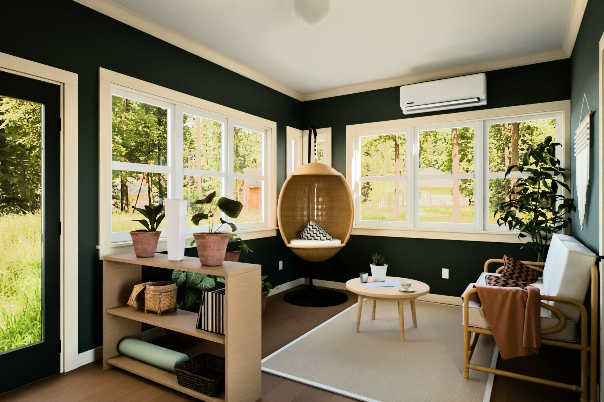
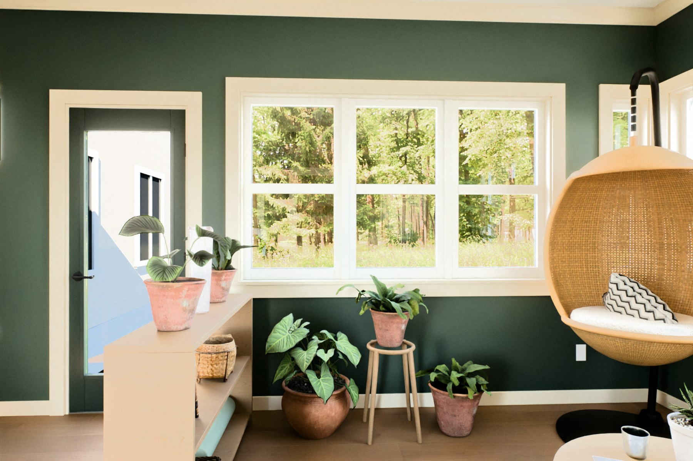
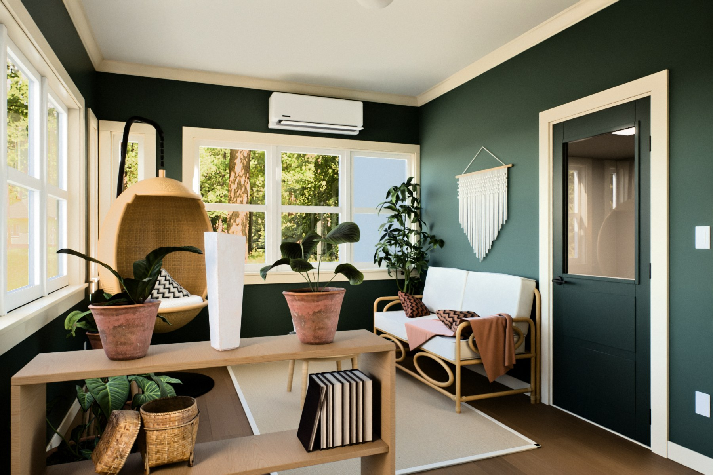
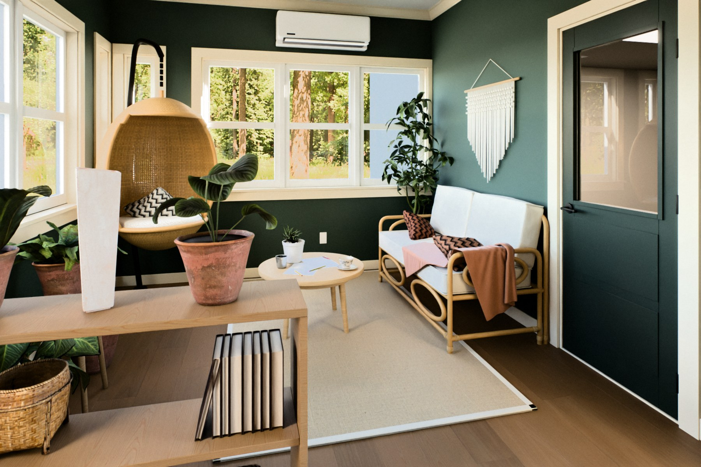
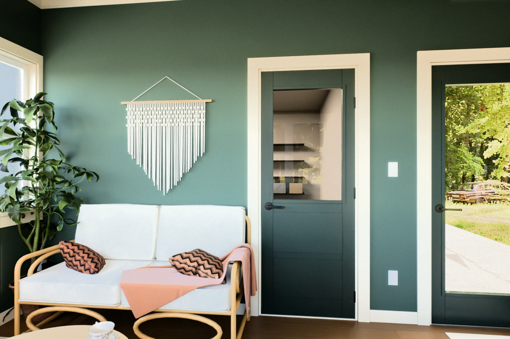
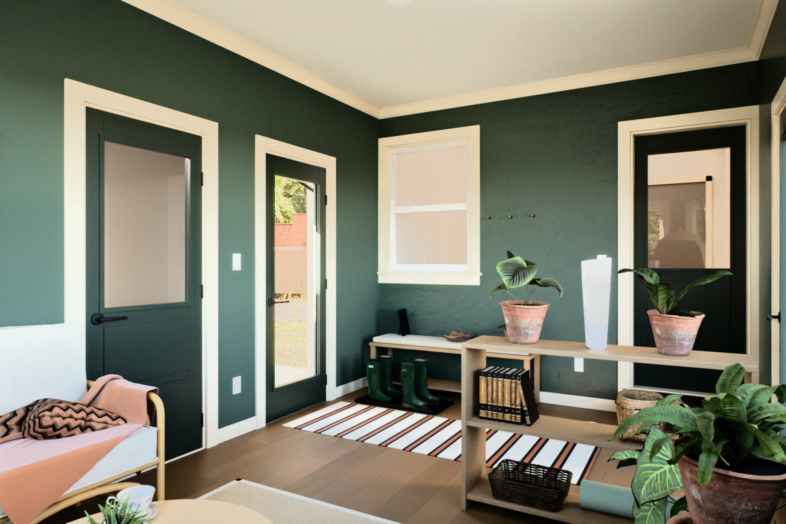
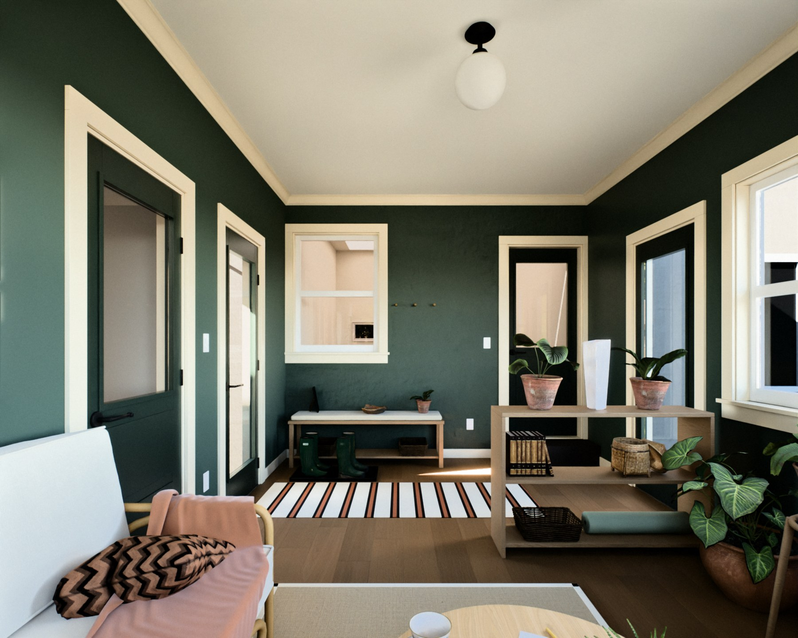
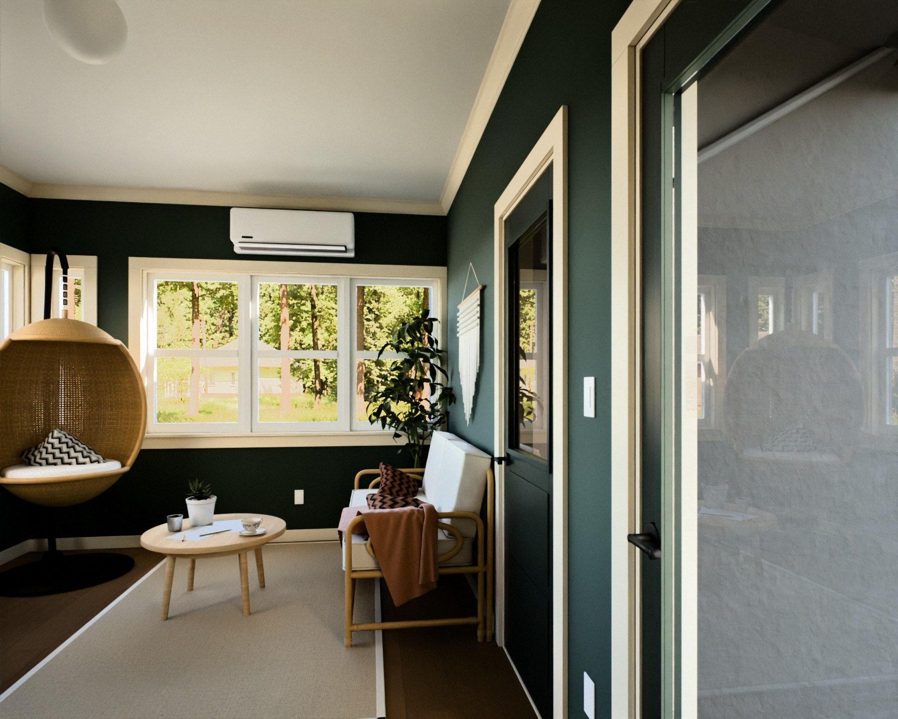

The chosen palette from every angle, at midday in fall. Walls SW 0016 Billiard Green, trim and crown SW 2833 Roycroft Vellum, doors SW 2847 Roycroft Bottle Green, ceiling SW 7008 Alabaster, floor Minwax Provincial 211 on white oak.








Walls are eggshell, the ceiling flat, trim and crown semi-gloss, doors satin. Windows are white vinyl and the handles are matte black. Each photo is exposed on its own.
Colors are screen values for the named chips. Check real samples in the room, in morning light.
The floor and ceiling comparisons are in the flip book.